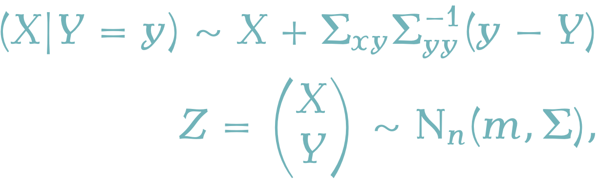

文献 (Doucet, 2010) の主張に証明を与える．

$$ %%% 演算子
%%% 線型代数学%%% 複素解析学 %%% 集合と位相
%%% 形式言語理論 %%% Graph Theory
%%% 多様体 %%% 代数 %%% 代数的位相幾何学 %%% 微分幾何学 %%% 函数解析 %%% 積分論%%% Fourier解析 %%% 数値解析
%%% 確率論%%% 情報理論 %%% 量子論 %%% 最適化 %%% 数理ファイナンス
%%% 偏微分方程式%%% 常微分方程式 %%% 統計力学 %%% 解析力学
%%% 統計的因果推論 %%% 応用統計学 %%% 数理統計%%% 計量経済学
%%% 無限次元統計模型の理論%%% Banach Lattices
%%% 圏 %代数の圏 %Metric space & Contraction maps %確率空間とMarkov核の圏 %Sober space & continuous map %Category of open subsets %Category of sheave %Category of presheave, PSh(C)=[C^op,set]のこと %Convergence spaceの圏 %一様空間と一様連続写像の圏 %フレームとフレームの射 %その反対圏 %滑らかな多様体の圏 %Quiverの圏
%%% SMC %%% 括弧類%%% 予約語
%%% 略記
%%% 矢印類 $$
1 正規確率変数同士の条件付き分布
\[Z=(X,Y)\sim\mathrm{N}_n(m,\Sigma)\] \[m=\begin{pmatrix}m_x\\m_y\end{pmatrix},\qquad\Sigma=\begin{pmatrix}\Sigma_{xx}&\Sigma_{xy}\\\Sigma_{xy}^\top&\Sigma_{yy}\end{pmatrix}\] で，共分散行列は正則 \(\Sigma\in\mathrm{GL}_n(\mathbb{R})\) とする．このとき， \[X|Y=y\sim\mathrm{N}_{n_x}(m_{x|y},\Sigma_{x|y}),\] \[m_{x|y}=m_x+\Sigma_{xy}\Sigma_{yy}^{-1}(y-m_y),\] \[\Sigma_{x|y}=\Sigma_{xx}-\Sigma_{xy}\Sigma_{yy}^{-1}\Sigma_{xy}^\top.\]
2 条件付き分布からのシミュレーション
条件付き確率変数 \(X|Y=y\) のシミュレーションは，条件付き共分散行列 \(\Sigma_{x|y}\) のCholesky分解 \(\Sigma_{x|y}=\sqrt{\Sigma_{x|y}}\left(\sqrt{\Sigma_{x|y}}\right)^\top\) を用いて， \[\overline{X}=m_{x|y}+\sqrt{\Sigma_{x|y}}U,\] \[U\sim\mathrm{N}_{n_x}(0,I_{n_x})\] によって行うのも直接的だが， \(n_x\) の次元が大きすぎる場合，Cholesky分解の計算がネックとなる．そのような場合は， \[\overline{X}=X+\Sigma_{xy}\Sigma_{yy}^{-1}(y-Y),\] \[Z=\begin{pmatrix}X\\Y\end{pmatrix}\sim\mathrm{N}_n(m,\Sigma),\] というアルゴリズムを用いることが出来る (Hoffman & Ribak, 1991)．
3 応用 Ensemble Kalman filter
また，Ensemble Kalman filterはこの手法の応用と理解することができ，この手法の別の応用としてFFBS (Forward Filtering Backward Sampling)アルゴリズムを代替するサンプリングアルゴリズムを得ることが出来ることも論じている．
線型Gaussな状態空間モデル \[ \begin{cases} X_n=A_nX_{n-1}+a_n+W_n&n\ge 1,\\ Y_n=B_nX_n+b_n+V_n,&n\ge0. \end{cases} \] \[ W_n\sim\mathrm{N}_p(0,R^w_n),\quad V_n\sim\mathrm{N}_q(0,R_n^v), \]
の最適な一段階予測推定量 \[ \eta_n:=\mathcal{L}[X_n|(Y_0,\cdots,Y_{n-1})] \] も，フィルタリング推定量 \[ \widehat{\eta}_n:=\mathcal{L}[X_n|(Y_0,\cdots,Y_n)] \] もGauss確率変数で，平均と分散は Section 1 の命題の繰り返し適用によって計算できる．これをKalman filterという．1
3.1 EnKF
しかし，状態空間（\(X_n\)の値域）の次元が大きすぎる場合，Section 2 で述べた理由と同様の理由で，Kalman gainの行列計算が実行不可能になる．
このステップを，粒子平均によって代替する粒子法がEnsemble Kalman filterであり，前述の障碍が典型的に生じてきた地球科学・海洋科学の分野で発展してきた (Evensen, 1994)．この方法では， Section 2 のサンプリングトリックを用いて，再帰的にフィルタリング分布と予測分布を近似していく．
3.2 FFBS
また，線型Gauss状態空間モデルのハイパーパラメータの推定が必要な場合などでは，Feynman-Kac分布 \(p(x_{0:n}|y_{1:n})\) からのサンプリングが必要になる．
典型的にはFFBS (Foward Filtering Backward Sampling) などの方法が知られている．これは \(p(x_{0:n}|y_{1:n})\) があるMarkov連鎖の見本道の分布に一致することに基づき，その後ろ向き核による分解から，
- 前向きにフィルタリング分布と予測分布を計算する再帰的アルゴリズムを実行する．
- 2つの分布から後ろ向き核を計算する．
- 後ろ向き核を用いて， \(X_n\sim p(x_n|y_{1:n})\) を後ろ向きにサンプリングしていく．
と実行する方法である．2
一方で， Section 2 のテクニックで次のようにしてサンプリングすることもできる．
- 前向きに \(\mathbb{E}[X_{0:n}|Y_{1:n}], \mathbb{E}[X_{0:n}|Y_{1:n}=y_{1:n}]\) を計算する．
- 次をサンプリングする：\[ \begin{align*} \overline{X}_{0:n}&:=E[X_{0:n}|Y_{1:n}=y_{1:n}]\\ &\qquad+X_{0:n}-\mathbb{E}[X_{0:n}|Y_{1:n}] \end{align*} \]
(Durbin & Koopman, 2002) では，多くの場合 \(R^w_n\) のランクが低いことに注目して， \(\mathbb{E}[W_{1:n}|Y_{1:n}]\) を計算して， \(p(x_0,w_{1:n}|y_{1:n})\) からサンプリングすることを提唱している．
3.3 その他
(Doucet, 2010) は他にも，時空間統計 (Cressie, 1993) と機械学習 (Rasmussen & Williams, 2006) などで生じるGauss過程への応用で役に立ち得るのではないかと示唆している．
References
Footnotes
(Del Moral & Penev, 2014) p.280 など参照．↩︎
(Chopin & Papaspiliopoulos, 2020) 5.4.4節 p.63 など参照．↩︎